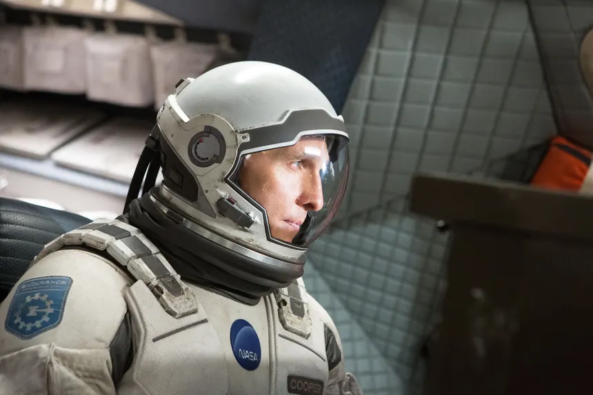
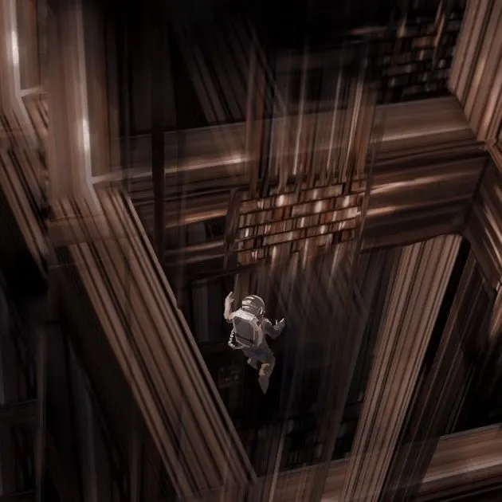

Interstellar
Año: 2014
Género: Ciencia Ficción
Director: Christopher Nolan
Actores: Matthew McConaughey, Anne Haithaway, David Gyasi
Al ver que la vida en la Tierra está llegando a su fin, un grupo de exploradores dirigidos por el piloto Cooper (McConaughey) y la científica Amelia (Hathaway) emprende una misión que puede ser la más importante de la historia de la humanidad: viajar más allá de nuestra galaxia para descubrir algún planeta en otra que pueda garantizar el futuro de la raza humana.
Al ver que la vida en la Tierra está llegando a su fin, un grupo de exploradores dirigidos por el piloto Cooper (McConaughey) y la científica Amelia (Hathaway) emprende una misión que puede ser la más importante de la historia de la humanidad: viajar más allá de nuestra galaxia para descubrir algún planeta en otra que pueda garantizar el futuro de la raza humana.
Al ver que la vida en la Tierra está llegando a su fin, un grupo de exploradores dirigidos por el piloto Cooper (McConaughey) y la científica Amelia (Hathaway) emprende una misión que puede ser la más importante de la historia de la humanidad: viajar más allá de nuestra galaxia para descubrir algún planeta en otra que pueda garantizar el futuro de la raza humana.